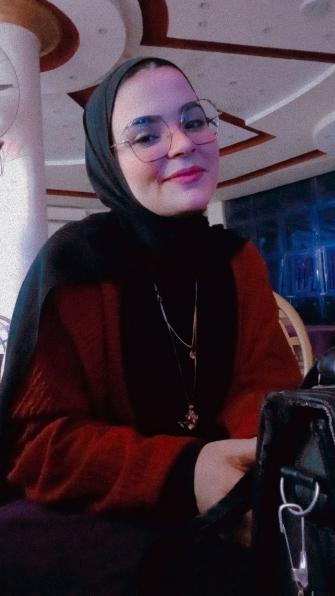

|
 |
I am a graduate of the Faculty of Computers and Information (FCI) with a strong passion for problem solving,
algorithms, and competitive programming. I have received intensive training through ACPC (Arab and Africa
Programming Contest) and Coach Academy, where I developed a deep understanding of data structures, algorithms,
and logical thinking.
Through these programs, I worked on solving a wide range of problems that required analytical thinking,
efficiency, and attention to detail. This experience strengthened my ability to break down complex problems into
smaller components, design optimal solutions, and write clean, efficient code under time constraints. It also
helped me build resilience, focus, and the ability to perform well under pressure.
In addition to technical skills, ACPC and Coach Academy enhanced my teamwork, discipline, and time management
skills. I learned how to collaborate effectively, analyze different approaches, learn from mistakes, and
continuously improve my performance. I am highly motivated, a fast learner, and always eager to take on new
challenges that push my limits and help me grow as a problem solver and software engineer.